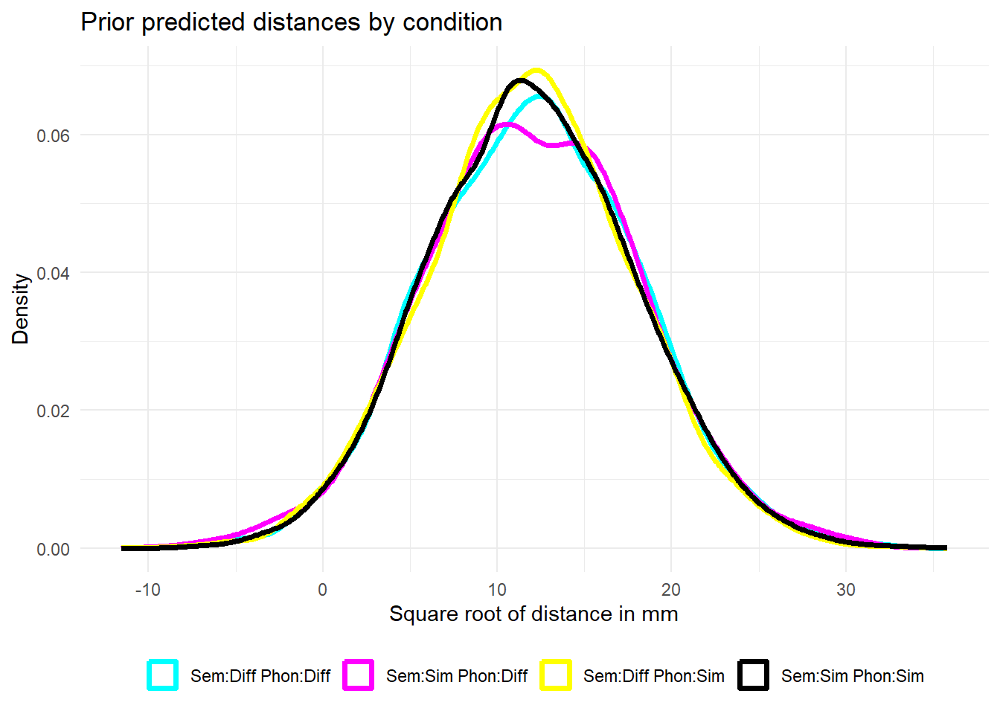
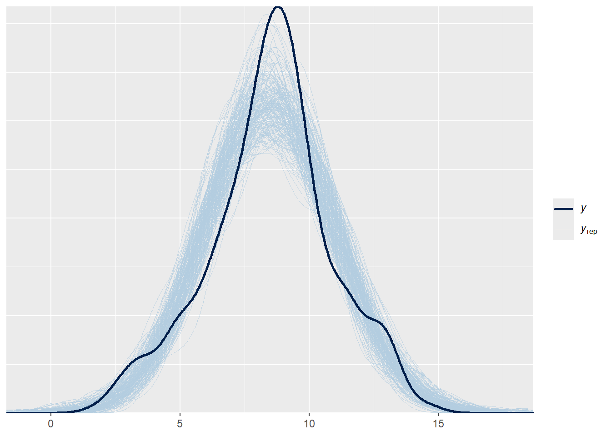
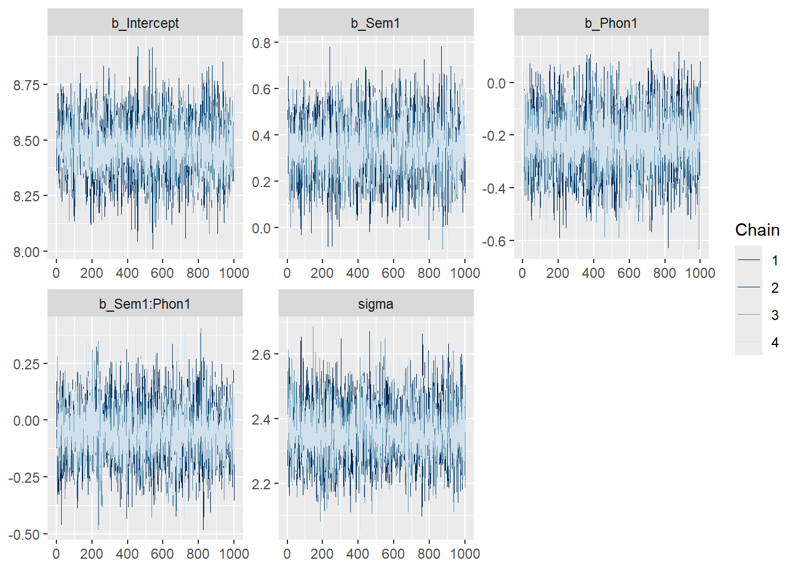
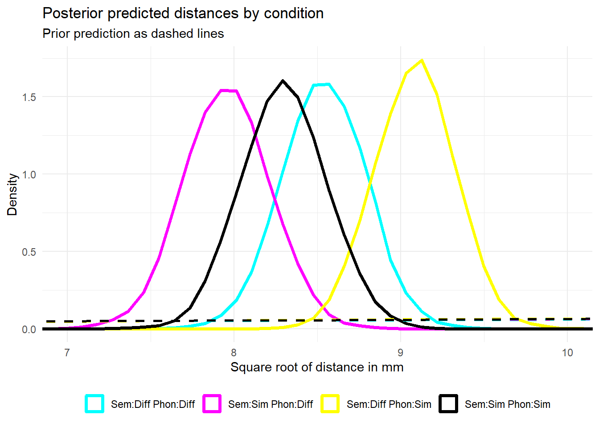

# A tibble: 364 × 3
Sem Phon Distance
<fct> <fct> <dbl>
1 Different Similar 76
2 Different Different 110
3 Similar Similar 214
4 Different Different 41
5 Different Different 78
6 Different Similar 87
7 Similar Different 49
8 Different Similar 72
9 Similar Different 135
10 Different Similar 78
# ℹ 354 more rows
We will now retrace the original article’s complete analysis. In their original analysis, they were interested in whether (a) semantic similarity between cities, (b) phonological similarity between cities, and (c) their interaction affects how close/far apart participants draw the cities.
(a) Specify Priors
Specify the model formula and appropriate weakly informative priors for all relevant predictors. Contrast-code the predictors.
# Contrast codingcontrasts(sim$Sem) <-contr.sum(2)contrasts(sim$Phon) <-contr.sum(2)# Square root of distance to combat slight model mismatchsim <- sim %>%mutate ( Distance_sqrt =sqrt ( Distance ) )# Formula without random effects as they are not avaliable in the datasetmy_formula <-bf(Distance_sqrt ~ Sem * Phon)# Calculating weak priors with the knowledge that the task was to mark two points on an# A4 sheet of paper, and measured in mma <-297b <-210iterations <-1000000set.seed(333)# Generate poin-pairs on the sheetx1 <-runif(iterations, 0, a)x2 <-runif(iterations, 0, b)y1 <-runif(iterations, 0, a)y2 <-runif(iterations, 0, b)# Distance between two pointsdistance <-sqrt( (x2 - x1)^2+ (y2 - y1)^2)mean(distance)
[1] 145.1131
sd(distance)
[1] 69.02474
# Longest distance on A4sqrt ( a^2+ b^2 )
[1] 363.743
get_prior(my_formula, sim)
prior class coef group resp dpar nlpar lb ub tag
(flat) b
(flat) b Phon1
(flat) b Sem1
(flat) b Sem1:Phon1
student_t(3, 8.6, 2.5) Intercept
student_t(3, 0, 2.5) sigma 0
source
default
(vectorized)
(vectorized)
(vectorized)
default
default
# Now priors for sqrt of Distancemy_priors <-c( prior(normal(12,3), class ="Intercept"),prior(normal(0,3), class ="b"),# Sigma gets 2*SD as I do not want it too restrictiveprior(normal(0,6), class ="sigma") )# Testing priorxmdl_prior <-brm ( formula = my_formula,prior = my_priors,sample_prior ="only",data = sim,seed =333)# Visualizing my priorsxmdl_prior %>%add_epred_draws(newdata =expand.grid(Sem =levels(sim$Sem),Phon =levels(sim$Phon))) %>%ggplot(aes(x = .epred, color =interaction(Sem, Phon))) +geom_density(size =1.3) +labs(title ="Prior predicted distances by condition",x ="Square root of distance in mm",y ="Density",color =NULL) +scale_color_manual(values =c("Different.Different"='#00FFFF',"Similar.Different"='#FF00FF',"Different.Similar"='#FFFF00',"Similar.Similar"='#000000'),labels=c("Sem:Diff Phon:Diff","Sem:Sim Phon:Diff","Sem:Diff Phon:Sim","Sem:Sim Phon:Sim")) +theme_minimal() +theme(legend.position ="bottom")

(b) Run the appropriate model for the research question
Check the overall model fit with posterior predictive checks. If the model does not fit the data well, fix the problem (check 06_homework_solutions.qmd for inspiration).
# Cheking fitpp_check(xmdl, ndraws =200)

(d) Assess sampling diagnostics
Check that chains are reasonably mixed and that sampling yielded a sufficient number of effective sample size. If there are issues, address them accordingly.
# Finding caterpillars and RHat / ESS. RHat of 1.00 and smallest ESS = 2530mcmc_plot(xmdl, type ="trace")

summary(xmdl)
Family: gaussian
Links: mu = identity
Formula: Distance_sqrt ~ Sem * Phon
Data: sim (Number of observations: 363)
Draws: 4 chains, each with iter = 2000; warmup = 1000; thin = 1;
total post-warmup draws = 4000
Regression Coefficients:
Estimate Est.Error l-95% CI u-95% CI Rhat Bulk_ESS Tail_ESS
Intercept 8.47 0.12 8.23 8.71 1.00 5332 3201
Sem1 0.34 0.12 0.10 0.59 1.00 5608 2920
Phon1 -0.22 0.12 -0.46 0.02 1.00 5441 2806
Sem1:Phon1 -0.05 0.12 -0.29 0.20 1.00 5553 3140
Further Distributional Parameters:
Estimate Est.Error l-95% CI u-95% CI Rhat Bulk_ESS Tail_ESS
sigma 2.36 0.09 2.19 2.54 1.00 4865 2427
Draws were sampled using sampling(NUTS). For each parameter, Bulk_ESS
and Tail_ESS are effective sample size measures, and Rhat is the potential
scale reduction factor on split chains (at convergence, Rhat = 1).
(e) Interpret the results
Now interpret the model relative to the research question and describe uncertainty, visualize posteriors, calculate posterior probabilities of direction, and calculate Bayes Factors for evidence for and against the posterior coefficients being point zero.
(Note: When you want to extract interaction terms like b_Sem1:Phon1, you have to put single quotation marks around them because R struggles with interpreting the colon)
# Plotting posteriorxmdl %>%add_epred_draws(newdata =expand.grid(Sem =levels(sim$Sem),Phon =levels(sim$Phon))) %>%ggplot(aes(x = .epred, color =interaction(Sem, Phon))) +geom_density(size =1.3) +geom_density(data = xmdl_prior %>%add_epred_draws(newdata =expand.grid(Sem =levels(sim$Sem),Phon =levels(sim$Phon))),aes(x = .epred, color =interaction(Sem, Phon)),linetype ="dashed",size =1 ) +coord_cartesian(xlim =c(7,10)) +labs(title ="Posterior predicted distances by condition",subtitle ="Prior prediction as dashed lines",x ="Square root of distance in mm",y ="Density",color =NULL) +scale_color_manual(values =c("Different.Different"='#00FFFF',"Similar.Different"='#FF00FF',"Different.Similar"='#FFFF00',"Similar.Similar"='#000000'),labels=c("Sem:Diff Phon:Diff","Sem:Sim Phon:Diff","Sem:Diff Phon:Sim","Sem:Sim Phon:Sim")) +theme_minimal() +theme(legend.position ="bottom")

# Looking at posterior in numbersposterior_summary(xmdl)
Bayes Factor (Savage-Dickey density ratio)
Parameter | BF
----------------------
(Intercept) | 5.01e+63
Sem1 | 1.78
Phon1 | 0.222
Sem1:Phon1 | 0.044
* Evidence Against The Null: 0
(g) Write up your entire analysis:
The goal is to test whether semantic similarity between cities, phonological similarity between cities and their interaction has an effect on the distance between where participants draw the cities.
A Bayesian model was fitted predicting the square root of the distance between cities from the phonological and semantic similarity, and their interaction. The choice to take the square root of the distance was made to combat a slight right skew observed when running the model without.
I selected weakly informative priors based on the dimensions of a A4 sheet of paper and tested to show their predictions were within a reasonable range.
The posterior predictive check was done visually and the predicted data matched the observed data reasonably well. Sampling diagnostics were also assessed visually with a trace plot that generated acceptable caterpillars. Numerically the sampling produced no RHat above 1.00 and had a smallest effective sample size of 2500. This suggests that the model is reliable.
Posteriors predict that the distance between cities tend to be smaller when the names are semantically similar with a coefficient of 0.34. The credible intervals are 0.10 to 0.59. This is further corroborated by a 99.7% probability that the direction is toward closed cities. Note, however, that the Bayes factor for this is only 1.66, so care should be taken in making too strong a claim for this hypothesis.
With a coefficient of -0.22 and credible intervals from -0.46 to 0.02 the effect of phonologically similar cities is much more uncertain. The predicted direction is toward smaller distance, but with a probability of 96.67%. A Bayes factor of 0.22 suggests weakly that there is no effect here.
The interaction is, while not clearly, more likely to be of no effect. With a coefficient of -0.05 (CI -0.29 to 0.20) and a probability of direction of 65.8% this is close to zero. A Bayes factor of 0.046 means that there is a strong claim to be made for this not having an effect.
To conclude, the model suggests that there is some validity to the claim that semantically similar cities are placed closer together, though not without some variance. Phonological similarity and the interaction between the two are suggested through the model to have less of an impact, with some uncertainty, though the model suggests that an effect of phonological similarity is more likely than the effect from their interaction.
OPTIONAL (h) compare your interpretation to the original findings
YOUR COMPARISON HERE
References
Winter, Bodo, and Teenie Matlock. 2013. “Making Judgments Based on Similarity and Proximity.”Metaphor and Symbol 28 (4): 219–32.